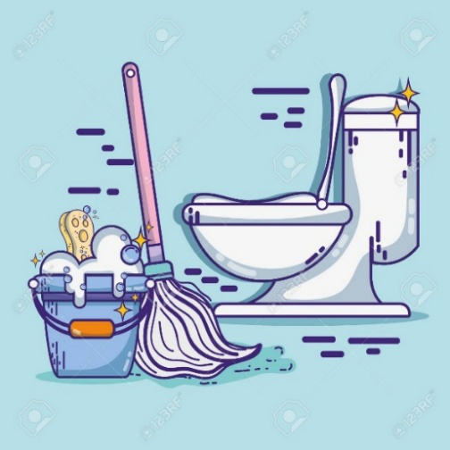
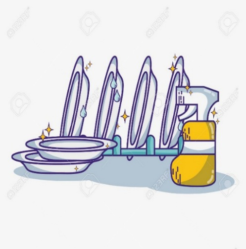
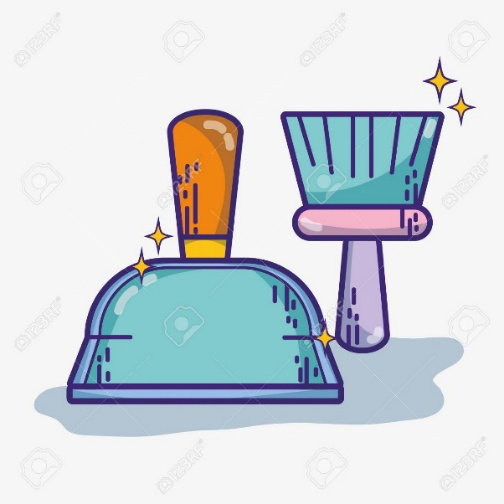
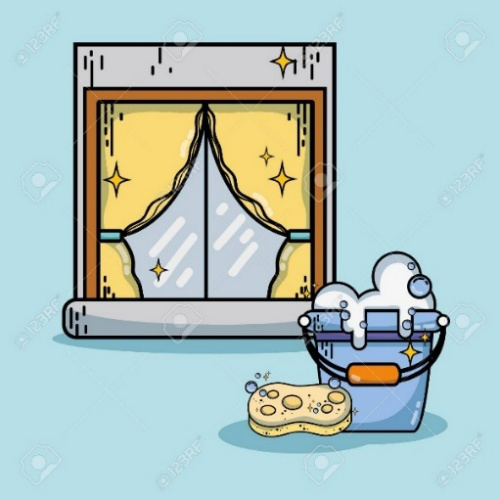

Domestic hygiene (sanitary preparation of food, cleanliness, and ventilation) means cleanliness in your home. It is important that the house be kept clean so that it is a healthy place.
If the house and everything in it are not cleaned often, moisture and dirt gather and it becomes an ideal place for germs, parasites and vectors (disease-carrying animals) to breed and multiply. These germs can cause the people living in the house to get sick.
include all the jobs which are done to keep the house and people's clothes and bedding clean.
These jobs include sweeping and washing floors, cleaning the toilet, washing clothes and bedding, and washing dishes and cooking utensils after meals.




As well as making sure that the house is a clean and healthy place, it is important for good health to keep our bodies clean.
If our bodies become dirty and sweaty and stay that way for a while, the skin and hair become ideal places for disease-causing germs to grow and multiply.
The teeth and gums also need to be kept clean to stop them from becoming diseased.
are all the things done to keep the body clean. Some of these activities are showering, washing hair, cleaning teeth and changing into clean clothes when necessary.
Diseases in communities caused by germs and parasites resulting from inadequate domestic and personal hygiene are:
*Food poisoning
*Gastroenteritis
*Diarrhoea caused by Campylobacter
*Pneumonia
*Trachoma
*Skin infections
*Hepatitis A
*Gastroenteritis
*Colds and flu
*Giardiasis
*Scabies infection
*Pediculosis (head lice infection)
*Hookworm infection
*Threadworm infection
*Roundworm infection (strongyloides)
*directly by the faecal-oral route, or by person to person or pet to person contact
*indirectly by vectors coming into contact with people or their food, people breathing in airborne droplets of moisture which contain germs or eating contaminated food.
*not cleaning the toilet
*not getting rid of rubbish
*not washing clothes and bedding frequently
*not storing food properly
*not washing hands
*not showering
*not washing hair
*Wipe down kitchen benches after food preparation.
*Wash dishes and cooking utensils after each meal.
*Sweep the floors.
*Empty the kitchen rubbish bin.
*Wash the floors.
*Clean the toilet.
*Clean the laundry tubs.
*Clean the shower recess/bath and handbasin.
*Dust surfaces
*Wash clothes and bed linen
*Clean the stove/oven and refrigerator
*Clean cupboards, windows and walls
*Brush the flyscreens
*Get rid of cobwebs
1)What is Domestic Hygiene?
2-3) What are the two way of transmission of disease-causing germs because of poor domestic hygiene?
4-6) Give 3 examples of domestic hygiene activities.
7)What is Personal Hygiene?
8-10) Give 3 examples of personal hygiene activities.
11-15) Give 5 diseases in the communities that caused by germs and bacteria.
16-18) Give 3 signs of poor domestic hygiene.
19-20) Give 2 signs of poor personal hygiene.